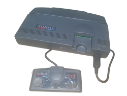
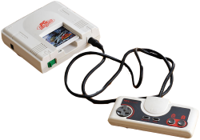

Turbo Grafx Games List
The Turbo Grafx had a great selection of games for the time. With its 16 bit graphics processor it was capable of handling some of the latest arcade conversions delivering arcade quality gaming at home. It was pretty much a Japanese console so it was also privy to games that western markets would never see unless imported. So games like Splatter House and R-Type were near perfect arcade conversions.
CLICK THIS LINK > Turbo Grafx & PC-Engine Games ListGames & Gadgets
Games are not that hard to find on Ebay and other popular online stores but they may be pricey due to the collectable nature of the console’s games. There is also the fact that they’re more like cards than the cartridges we are used to seeing in that era.
The Turbo Grafx Turbo Stick
The Turbo Stick was a great addition to the console featuring a variable speed turbo fire buttons.A high preciusion joystick and a slow motion button for those really tricky games.
The Turbo Grafx Turbo Tap
This devive allowed users to add five more joypads, so you can player multiplayer games with upto five players.

In the last decade there has been a rise in compatible SD PC-Engine cards that allow to back-up your games SD card that can be mounted in an adapted Turbo Grafx game card. These are known as Everdrive Cards and Turbo Cards. Despite the name difference they do the same thing, which is allow and SD card that contains games to mounted on a Turbo Grafx pcb that can then be inserted into the PC-Engine and played
Compitibilty Game Regions & TV PAL/NTSC/SECAM
TV Set Compatibility
Turbo Grafx Europe
This is where things used to get tricky. I say used to get tricky because now with the internet and all, it is possible to get work arounds a lot easier than back then. So first the well discuss the Turbo Grafx Europe version. The European version came in two flavours, the UK and French versions. If have the Turbo Grafx UK version then you good to go, all you need from there is a TV with AV inputs (red, yellow,white) or a scart block which you can plug the red, yellow,white leads into before plugging that into the SCART socket on the back of you TV. I would say this is the best options to go for otherwise it’s Google time.
The Turbo Grafx16 USA

Now this is a little extra effort, but it can work OK. The first obstacle is the power supply of the 10.5 Volt 730ma charger with the polarity of + outside and - inside when speaking of the power supply’s plug at the console end. Do your research before plugging and switching on the console. If you’ve no experience at all with electronics, then speak to an electrician who can advise you or a friend with similar experience. Once you’ve overcome this you will then need to get hold of a TV that handles NTSC which is a video standard used in America and Japan. As I said it is easier to just buy the UK version, I think.
The PC-Engine Japanese
ddly enough despite it’s distance from the western games market, for the time, PC-Engines were imported quite frequently from Japan to the europe. The only problem was affording one. In order for these importers to sell the consoles they had to do their own modifications to the console before selling or Japanese suppliers would neatly modify the console themselves, so they could sell them to western imposters more easily. So in most cases, your Japanese console will come ready to plug straight into the AV sockets (or SCART socket, if you have an AV to SCART). Because of the adaptations the PC-Engine will get around the NTSC issue that plagues people who imported the USA Turbo Grafx 16 to use on a UK PAL TV. When it comes to power supply for PC-Engine, these days you will find a range of 3rd party power supplies online from retro gaming stores.these are now